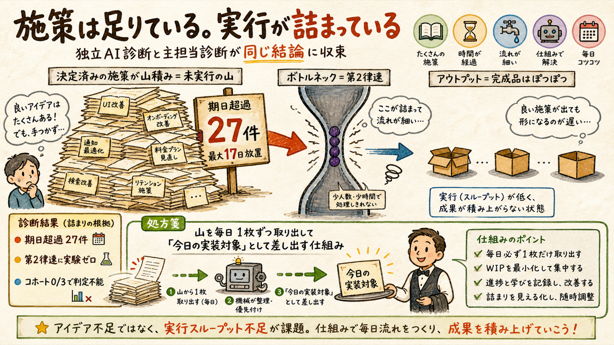
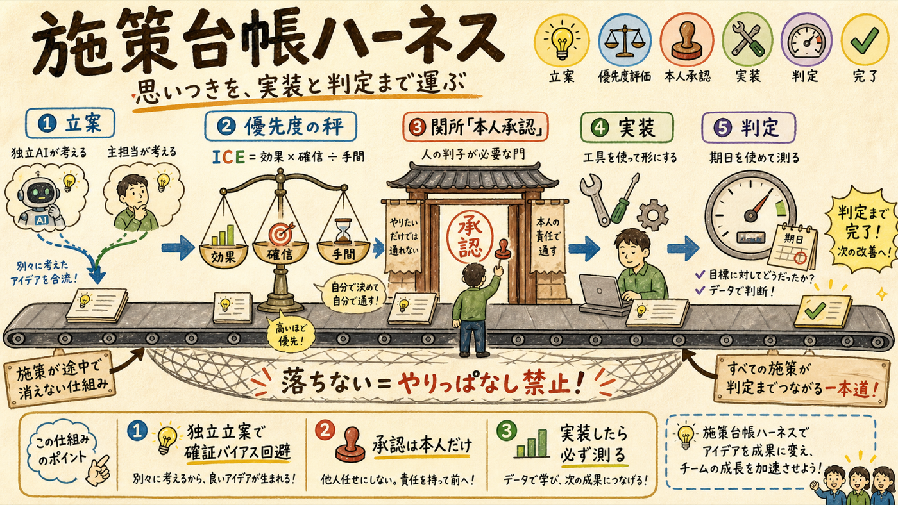

施策の「立案→優先度→承認→実装→判定」を一気通貫で管理する施策台帳ハーネスを構築し、文脈ゼロの独立AIと主担当の双方で立案した施策を統合して12件積みました。承認された施策だけが毎日のgrowth-tickに「今日の実装対象」として出ます。
node scripts/measures.mjs（ICE優先度・実装レシピ・判定指標・期日を機械強制）＋growth-tick統合。承認と採否は本人しかできない（--by-owner防波堤）文脈ゼロの独立AIに一次データだけ渡して立案させ、主担当の案と突き合わせた結果、両者が同じ結論に収束しました。

| 実測（一次データ） | 意味 |
|---|---|
| coordタスク27件が期日超過（最大17日） | ウォーターマーク・TikTokプロフ整備など「決定済み」が放置 |
| 第2律速（冒頭離脱40-45%）に実験実体ゼロ | 診断済みなのに experiments.json に登録されていない |
| H35/H37 コホート0/3 | シェア率0.003%の律速に対する実験が「制作待ち」で判定不能 |
| 登録ペース0.56人/日（このままだと1000まで約4.5年） | 施策の不足でなく実行スループットの問題 |
思いついたが実装されない・実装したが測らない、を構造的に禁止する台帳（SSOT=analytics/measures.json）。

# 毎日: growth-tick が承認済み施策の最上位を「今日の実装対象」として先頭表示 node scripts/growth-tick.mjs # 台帳操作 node scripts/measures.mjs list # ICE降順（ICE = 効果×確信/手間） node scripts/measures.mjs next # 次に実装すべき施策＋レシピ＋判定基準 node scripts/measures.mjs status M2 approved --by-owner # 承認は本人のみ（防波堤）
規律: 各施策は〔律速リンク・実装レシピ・判定指標・判定期日〕が無いと台帳に入れません（validateが機械拒否）。実装停滞7日超・判定期日超過・第一律速に施策ゼロは growth-tick が毎日WARNします。テスト30本PASS・独立採点95/100で検証済み。
全て実行中の実験（H42サムネA/B・SH-CONTENT-1・TikTok形式実験）と干渉しない設計です。番号で承認/却下を返信してください。
| ID | 律速 | 施策 | ICE | 要点 |
|---|---|---|---|---|
| M2 | 律速2 | 冒頭断定テンプレを次回制作から適用＋ゲート化 | 24.5 | 冒頭7-18秒で40-45%離脱への直接手。制作ラインに乗せるだけでコホートが自動で積み上がる |
| M9 | 横断 | metrics-snapshot週次自動化（Mac mini） | 22.5 | 計測16日停止の再発防止＝全judgeの土台 |
| M4 | 律速4 | 登録ウォーターマーク設定 | 21 | 11日放置タスク。1回の設定が全95本に自動適用・手間最小 |
| M5 | 律速4 | 公開前ショート2本のリンク欠落修正 | 18 | growth-state実測フラグ。7/6公開前に済ませる（本編の登録変換はショートの36倍） |
| M6 | 律速4 | CTAコメント付与を日次スイープへ組込 | 16 | 毎日2本公開で欠落が再蓄積する構造を自動化で塞ぐ |
| M8 | 横断 | coordタスク棚卸し＋週次実行レビュー儀式化 | 16 | 27件を即実行/消化/廃止に三分類。以後overdue7日超は倒すルール |
| M7 | 横断 | TikTokプロフィール→YouTube導線整備 | 15 | 11日放置。TikTokエンゲージ8倍の面からYT外部流入（現状ほぼ0）を開く |
| M10 | 律速3 | TikTok短尺デイリー化（7/17判定後） | 14 | TT-EXP-051の勝ち形式を定常運用へ |
| M1 | 律速1 | H42勝ち様式の横展開サムネ在庫を事前生産 | 13.5 | 判定7/15と同時に一括反映＝2週間の空走をゼロに（判定前ライブ反映は厳禁） |
| M3 | 律速3 | H35/H37コホート充填を今週のショート枠に強制割当 | 12 | シェア率0.003%律速の実験を判定可能にする（設計済み3本の制作） |
| M11 | 律速3 | コメント全返信＋二択質問の日次運用 | 6.7 | 会話面（30日11コメント）の底上げ。AI臭返信禁止 |
| M12 | 横断 | コミュニティ投稿 週2（4週撤退基準付き） | 6 | 期待値低め・コストほぼゼロ・撤退基準を先に固定 |
推奨: 上位4件（M2/M9/M4/M5）は手間が小さく確信度が高い即効枠。M1/M3は工数はあるが第1・第3律速の本丸です。詳細レシピ・判定基準は node scripts/measures.mjs show M2 で全文確認できます。